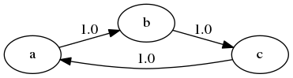

Discrete Dynamic Programming
Computational Economics 2022 (ECO309)
Introduction
Say something about dynamic optimization…
The imperialism of Dynamic Programming
— Recursive Macroeconomic Theory (Ljunqvist & Sargent)
I spent the Fall quarter (of 1950) at RAND. My first task was to find a name for multistage decision processes. An interesting question is, “Where did the name, dynamic programming, come from?” The 1950s were not good years for mathematical research. We had a very interesting gentleman in Washington named Wilson. He was Secretary of Defense, and he actually had a pathological fear and hatred of the word “research”. I’m not using the term lightly; I’m using it precisely. His face would suffuse, he would turn red, and he would get violent if people used the term research in his presence. You can imagine how he felt, then, about the term mathematical. The RAND Corporation was employed by the Air Force, and the Air Force had Wilson as its boss, essentially. Hence, I felt I had to do something to shield Wilson and the Air Force from the fact that I was really doing mathematics inside the RAND Corporation. What title, what name, could I choose? In the first place I was interested in planning, in decision making, in thinking. But planning, is not a good word for various reasons. I decided therefore to use the word “programming”. I wanted to get across the idea that this was dynamic, this was multistage, this was time-varying. I thought, let’s kill two birds with one stone. Let’s take a word that has an absolutely precise meaning, namely dynamic, in the classical physical sense. It also has a very interesting property as an adjective, and that is it’s impossible to use the word dynamic in a pejorative sense. Try thinking of some combination that will possibly give it a pejorative meaning. It’s impossible. Thus, I thought dynamic programming was a good name. It was something not even a Congressman could object to. So I used it as an umbrella for my activities.
— Richard Bellman, Eye of the Hurricane: An Autobiography (1984, page 159)
Markov chain and Markov process
Markov chain and Markov process
- Stochastic process: family of random variables indexed by time
- A stochastic process has the Markov property if its future evolution depends only on its current state.
- Special cases:
| Discrete States | Continuous States | |
|---|---|---|
| Discrete Time | Discrete Markov Chain | Continuous Markov Chain |
| Continuous Time | Markov Jump Process | Markov Process |
Stochastic matrices
- a matrix \(M \in R^n\times R^n\) matrix is said to be stochastic if
- all coefficents are non-negative
- all the lines lines sum to 1 (\(\forall i, \sum_j M_{ij} = 1\))
- a probability density is a vector \(\mu \in R^n\) such that :
- all components are non-negative
- all coefficients sum to 1 (\(\sum_{i=1}^n \mu_{i} = 1\))
- a distribution is a vector with such that:
- all components are non-negative
Simulation
Consider: \(\mu_{i,t+1}' =\mu_t' P\)
We have \(\mu_{i,t+1} = \sum_{k=1}^n \mu_{k,t} P_{k, i}\)
And: \(\sum_i\mu_{i,t+1} = \sum_i \mu_{i,t}\)
Postmultiplication by a stochastic matrix preserves the mass.
Interpretation: \(P_{ij}\) is the fraction of the mass initially in state \(i\) which ends up in \(j\)
Example
\[ \begin{eqnarray} \underbrace{ \begin{pmatrix} 0.5 & 0.3 & 0.2 \end{pmatrix} }\_{\mu_t'} \begin{pmatrix} 0.4 & 0.6 & 0.0 \\\\ 0.2 & 0.5 & 0.3 \\\\ 0 & 0 & 1.0 \end{pmatrix} && \\\\ \underbrace{ \begin{pmatrix} 0.5\times0.4+0.3\times 0.2 & 0.5\times0.6+0.3\times 0.5 & 0.3\times 0.3 + 0.2\times 1.0 \end{pmatrix} }\_{\mu_{t+1}'}&& \end{eqnarray} \]
Probabilistic interpretation
- Denote by \(S=(s_1,...s_n)\) a finite set with \(n\) elements (\(|S|=n\)).
- A Markov Chain with values in \(S\) and with transitions given by a stochastic matrix \(P\in R^n\times R^n\) corresponds to a stochastic process \((X\_t)\_{t\geq 0}\) such that \[P\_{ij} = Prob(X\_{t+1}=s\_j|X\_t=s_i)\]
- In words, line \(i\) describes the conditional distribution of \(X_{t+1}\) conditional on \(X_t=s_i\).
What about longer horizons?
It is easy to show that for any \(k\), \(P^k\) is a stochastic matrix.
\(P^k_{ij}\) denotes the probability of ending in \(j\), after \(k\) periods, starting from \(i\)
Given an initial distribution \(\mu_0\in R^{+ n}\)
- Which states will be visited with positive probability between t=0 and t=k?
- What happens in the very long run?
We need to study a little bit the properties of Markov Chains
Connectivity
Two states \(s_i\) and \(s_j\) are connected if \(P_{ij}>0\)
We call incidence matrix: \(\mathcal{I}(P)=(\delta_{P_{ij}>0})_{ij}\)
Two states \(i\) and \(j\) communicate with each other if there are \(k\) and \(l\) such that: \((P^k)_ {i,j}>0\) and \((P^l)_ {j,i}>0\)
- it is an equivalence relation
- we can define equivalence classes
A stochastic matrix \(P\) is irreducible if all states communicate
- there is a unique communication class
Connectivity and irreducibility (example from QE)
Irreducible
- All states can be reached with positive probably from any other initial state.
Not irreducible
- There is a subset of states (poor), which absorbs all the mass coming in.
Aperiodicity
- Are there cycles? Starting from a state \(i\), how long does it take to return to \(i\)?
- The period of a state is defined as \[gcd( {k\geq 1 | (P^k)_{i,i}>0} )\]
- If a state has a period d>1 the chain returns to the state only at dates multiple of d.
Aperiodicity (example from QE)
Periodic

- If you start from some states, you return to it, but not before two periods.
Aperiodic

- If some mass leaves a state, some of it returns to the state in the next period.
Stationary distribution
\(\mu\) is a stationary distribution if \(\mu' = \mu' P\)
Theorem: there always exists such a distribution that is not \(\mu=0\)
- proof: Brouwer theorem (fixed-point result for compact-convex set)
- \(f: \mu\rightarrow (\mu'P)'\)
Theorem:
- if P is irreducible the fixed point \(\mu^{\star}\) is unique
- if P is irreducible and aperiodic \(|\mu_0' P^k - \mu^{\star}| \underset{k\to+\infty}{\longrightarrow} 0\) for any initial distribution \(\mu_0\)
We then say the Markov chain is ergodic
\(\mu^{\star}\) is the ergodic distribution
- it is the best guess, one can do for the state of the chain in the very far future
Stationary distribution (proof)
- Brouwer’s theorem: Let \(\mathcal{C}\) be a compact convex subset of \(R^n\) and \(f\) a continuous mapping \(\mathcal{C}\rightarrow \mathcal{C}\). Then there exists a fixed point \(x_0\in \mathcal{C}\) such that \(f(x_0)=x_0\)
- Result hinges on:
- continuity of \(f: \mu \mapsto \mu P\)
- convexity of \(\\{x \in R^{+,n} ,\\; |x|_1=1 \\}\) (easy to check)
- compactness of \(\\{x \in R^{+,n} ,\\; |x|_1=1 \\}\)
- it is bounded
- and closed (the inverse image of 1 for \(u\mapsto |u|_1\) which is continuous)
Stationary distribution?
How do we compute the stationary distribution?
- Simulation
- Linear algebra
- Decomposition
Simulating a Markov Chain
- Very simple idea:
- start with any \(\mu_0\) and compute the iterates recursively
- \(\mu_{n+1}' = \mu_n' P\)
- convergence is linear:
- \(|\mu_{n+1} - \mu_n| \leq |P| |\mu_n - \mu_{n-1}|\)
Using Linear Algebra
- Find the solution of \(\mu'(P-I) = 0\) ?
- not well defined, 0 is a solution
- we need to incorporate the constraint \(\sum_i(\mu_i)=1\)
- since P-I is at most of rank \(n-1\) we can replace one column by this condition
- Method:
- Define \(M_{ij} = \begin{cases} 1 &\text{if} & j =1 \\\\ (P-I)_{ij} & \text{if} & j> 1 \end{cases}\)
- Define \(D_i = \begin{cases} 1 & \text{if} & j = 1 \\\\0 & \text{if} & j>0 \end{cases}\)
- With a linear algebra solver
- look for a solution \(\mu\) of \(\mu' M = D\)
- or \(M^{\prime} \mu = D\prime\)
- if you find a solution, it is unique! (theorem)
- Alternative:
- minimize residual squares of overidentified system
Code example
julia [1-2|3-6|7-9|10-12|13-14|15-17] # we use the identity matrix and the \ operator using LinearAlgebra: I, \ # define a stochastic matrix (lines sum to 1) P = [ 0.9 0.1 0.0 ; 0.05 0.9 0.05 ; 0.0 0.9 0.1 ] # define an auxiliary matrix M = P' - I M[end,:] .= 1.0 # define rhs R = zeros(3) R[end] = 1 # solve the system μ = M\R # check that you have a solution: @assert sum(μ) == 1 @assert all(abs.(μ'P - μ').<1e-10)
Further comments
- Knowledge about the structure of the Markov Chain can help speedup the calculations
- There are methods for potentially very-large linear system
- Newton-Krylov based methods, GMRES
- Basic algorithms are easy to implement by hand
- QuantEcon toolbox has very good methods to study markov chains
Dynamic Programing: notations
General Formulation
-
Markov Decision Problem
- states: \(s \in S\)
- actions: \(x \in X(s)\)
- transitions: \(\pi(s'| s, x) \in S\)
- \(probability\) of going to \(s'\) in state \(s\)…
- … given action \(x\)
-
Reward: \(r(s,x) \in R\)
- aka felicity, intratemporal utility
-
Policy: \(x(): s \rightarrow x\in X(s)\)
- a.k.a. decision rule
- we consider deterministic policy
- given \(x()\), the evolution of \(s\) is a Markov process
- \(\pi(. |s, x())\) is a distribution for \(s'\) over \(S\)
- it depends only on \(s\)